本文是根据逻辑回归实验总结的数学推导和实验结果。
数学符号格式规范
本文格式参考了 [Bishop 2006]，若不加特殊说明，定义向量时均是列向量。
| 数据类型 |
格式规范 |
LaTex 写法 |
实际效果 |
| 向量、矩阵 |
加粗罗马字母 |
\mathrm{\mathbf{w}} |
w |
| 转置 |
右上标 T |
(w_0, w_1, ..., w_M)^T |
(w0,w1,...,wM)T |
| 随机变量分布类型 |
书法字母 (calligraphic letters) |
\mathcal{N} |
N |
设计思想
考虑只有两个预测器 x1,x2 的模型，它们可能是连续变量，也可能是布尔值。发生比对数（Logit(log-odds)）通常形式为：
l=β0+β1x1+β2x2(1)
系数 βi 是模型的参数，注意这里是线性模型，因为 Logit 是预测器 x1,x2 的线性组合，再加上常数 β0。相应的发生比（odds）就是指数形式：
o=bβ0+β1x1+β2x2(2)
发生比一般定义为某个事件发生和不发生的比率 1−pp，b 是对数和指数函数所用的底数。因为发生比不是预测器的线性组合，这就是一个非线性的模型。
假设事件有 1 次不发生，那么就有 o 次发生，总共有 1+o 次试验，因此事件发生的概率 p为：
p=1+oo=bβ0+β1x1+β2x2+1bβ0+β1x1+β2x2=1+b−(β0+β1x1+β2x2)1(3)
通常将底数 b 取值为 e，但在计算指数的时候还是取 10，这样计算出来的发生比更易于理解。对于参数为 βT=(−3,1,2) 的模型，l 为：
l=−3+1⋅x1+2⋅x2(4)
这个模型的含义如下：
-
β0=−3 是 y−截距，表示所有预测器都是 0 时的发生比对数。发生比为 10−3=1:1000，那么发生概率为 1/(1000+1)=1/1001≈0.001=0.1%。
-
−β0=3 是 x−截距，表示发生比对数 l=0 时 l′=1⋅x1+2⋅x2 的值。在这个时候发生比为 100=1，发生概率为 1/(1+1)=1/2=50%。
-
β1=1 意味着 x1 每增大 1，发生比对数增加 1⋅1，发生比变为原来的 101=10 倍。
-
β2=2 意味着 x2 每增大 1，发生比对数增加 2⋅1，发生比变为原来的 102=100 倍。
这个模型很有用处，比如为了比较两种医疗方式的效果，一种将 x1 减小了 3，另一种将 x2 减小了 2，在这个模型之下，第一种医疗方式将发生比除以了 10(1⋅3)=1000，第二种将发生比除以了 10(2⋅2)=10000，因此第二种医疗方式更有效。
逻辑回归的任务就是估计这种逻辑模型的参数，同时计算对数据拟合的好坏程度。
发生比及其对数的得来
上一节直接给出了发生比对数就是自变量的线性组合，并指出了在给定参数下自变量的某个分量的变化对事件发生比的影响。但是我们需要思考：为什么发生比对数 l 定义为自变量的线性组合呢？
逻辑回归往往研究的都是二值自变量 Y 的取值问题，即成功（事件发生，类别 1，Y=1）、不成功（事件不发生，类别 0，Y=0）两类。
对于给定的 n+1 维向量 X=(1,X1,X2,...,Xn)T，我们需要预测随机变量 Y（可以看作是类别）为 0 或 1 的概率。
根据贝叶斯公式：
P(Y=1∣X)=P(Y=0)P(X∣Y=0))+P(Y=1)P(X∣Y=1)P(Y=1)P(X∣Y=1)=1+P(Y=1)P(X∣Y=1)P(Y=0)P(X∣Y=0)1取对数,X各分量之间相互独立1+explnP(Y=1)∏i=1nP(Xi∣Y=1)P(Y=0)∏i=1nP(Xi∣Y=0)1P(Y=1)=π1+exp[ln1−ππ+∑i=1nlnP(Xi∣Y=1)P(Xi∣Y=0)1(5)
我们假定每一类中的 X 都服从相应的正态分布，比如在 Y=0 这一类中随机变量 Xi 就服从正态分布 N(μi0,σi0)：
P(Xi∣Y=k)=σik2π1exp2σik2−(Xi−μik)2(6)
取对数得到：
lnP(Xi∣Y=k)=−lnσik2π−2σik2(Xi−μik)2(7)
在不同类别的 X 方差都相同的情况下，k 值不同的 σik 均用 σi 表示，(5) 式分母中被求和的通项是：
lnP(Xi∣Y=1)P(Xi∣Y=0)=lnP(Xi∣Y=0)−lnP(Xi∣Y=1)=(−lnσi02π−2σi02(Xi−μi0)2)−(−lnσi12π−2σi12(Xi−μi1)2)=σi2μi0−μi1Xi−2σi2μi02−μi12(8)
因此 (5) 式的结果为：
P(Y=1∣X)=1+exp∑i=1n[σi2μi1−μi0Xi−2σi2μi12−μi02]1=1+exp(−θ0+∑i=1n−θiXi)1(9)
（可以看到，当不同类别的 X 方差都相同的情况下，我们将得到线性边界。）
那么我们可以得到另一类的概率：
P(Y=0∣X)=1−P(Y=1∣X)=1+exp(−θ0+∑i=1n−θiXi)exp(−θ0+∑i=1n−θiXi)(10)
以 p=P(Y=1∣X) 作为发生（成功，类别 1）的概率，那么发生比为：
o=exp(θ0+i=1∑nθiXi)(11)
这就是前文的 (1)(2) 两个式子的得来，我们也不难得出前文的 b=e,βi=θi。
利用机器学习算法获得模型参数
我们以概率划分事件的发生与否，也就是说 p>0.5（o>1） 记为成功的一类，即 Y=1，p<0.5（o<1） 记为不成功的另一类，即 Y=0。以 θ 为参数，得到如下的边界函数：
l=θ0+θ1X1+...+θnXn=θTX(12)
定义标准 Logistic 函数（是一种 sigmoid 函数（值域在 0 到 1 之间）），在自变量大于 0 时函数值大于 0.5，在自变量小于 0 时函数值小于 0.5：
g(z)=1+e−z1(13)
当自变量 z 在 [−6,6] 之间时，它的图像如下：

那么相应的预测函数是将 Logistic 函数的自变量看做边界函数 l 的结果：
hθ(X)=g(l)=1+exp(−l)1=1+exp−θTX1(14)
hθ(X) 就是成功的概率：
P(Y=1∣X;θ)=hθ(X)P(Y=0∣X;θ)=1−hθ(X)(15)
式 (15) 可以利用指数函数统一成一个式子：
P(Y=y∣X;θ)=hθ(X)y[1−hθ(X)]1−y(16)
在 X 各个分量都是独立同分布的情况下，一共观测 m 组数据 x=(x1,x2,...,xm)，它们的类别分别是 y=(y1,y2,...,y3)，我们得到以参数 θ 为自变量，出现 y 的概率 L 为因变量的条件似然函数：
L(θ∣x)=l=1∏mP(yl∣xl;θ)=l=1∏mP(yl∣xl;θ)=l=1∏mhθ(xl)yl[1−hθ(xl)]1−yl(17)
对数似然函数为：
l(θ∣x)=lnL(θ∣x)=l=1∑m{yllnhθ(xl)+(1−yl)ln[1−hθ(xl)]}=l=1∑m{yllnhθ(xl)−ylln[1−hθ(xl)]+ylln[1−hθ(xl)]+(1−yl)ln[1−hθ(xl)]}=l=1∑m{ylθTxl+ln[1−hθ(xl)]}=l=1∑m{ylθTxl−θTxl−ln(1+exp−θTxl)}(18)
最大似然估计就是要求得使 l(θ∣x) 取最大值时的 θ，我们可以使用梯度上升法求解。对其求导数得：
∂θ∂l(θ∣x)=l=1∑m{(yl−1)xlT+1+exp−θTxlxlTexp−θTxl}=l=1∑mxlT{yl−1+1+exp−θTxlexp−θTxl}=l=1∑mxlT{yl−1+P(yl=0∣xl;θ)}=l=1∑mxlT{yl−P(yl=1∣xl;θ)}=l=1∑mxlT{yl−1+exp−θTxl1}(19)
假设学习步长为 η，第 k 轮迭代的参数为 θ(t)，则梯度上升迭代过程为：
θ(t+1)=θ(t)+ηl=1∑mxl{yl−1+exp−θ(t)Txl1}(20)
实验数据生成
根据『利用机器学习算法获得模型参数』一节的推导，要想得到线性边界，数据必须满足是方差相同的高斯分布的条件。我们只生成二维的数据 X=(X1,X2) 便于图形化显示，生成的数据服从的正态分布,
第0类(Y=0)：X1∼N(μ10,σ12)和X2∼N(μ20,σ22)第1类(Y=1)：X1∼N(μ11,σ12)和X2∼N(μ21,σ22)(21)
或者写成二维正态分布的形式：
第0类(Y=0)：X∼N(μ0,Σ)第1类(Y=1)：X∼N(μ1,Σ)(22)
最大后验估计（MAP），带惩罚项的梯度上升法
根据贝叶斯公式：
p(ω∣D)=p(D)p(D∣ω)p(ω)(23)
其中：
- p(ω∣D) 为后验概率，可以理解为『在已经知道数据的情况下模型参数为 ω 的概率』
- p(D∣ω) 为似然函数，可以理解为『在给定参数情况下，得到的结果与已知数据吻合的概率』
- p(ω) 为先验概率，可以理解为『模型参数是 ω 的概率』
就拿抛硬币问题（抛了 5 次）来举例：
- p(ω∣D) 为后验概率，可以理解为『在已经知道数据的情况下（4 次正面，1 次反面）模型参数为 ω 的概率』
- p(D∣ω) 为似然函数，可以理解为『在给定参数情况下，得到的结果与已知数据吻合（4 次正面，1 次反面）的概率』
- p(ω) 为先验概率，可以理解为『模型参数是 ω 的概率』
在抛硬币问题中，我们仅仅最大化似然函数是不准确的，因为求得了一个模型参数 ω 使 4 次正面，1 次反面这种情况最大化了，但要知道这个模型参数出现的概率也是很小的（概率最大的模型参数是正反面 1:1 出现）。因此我们要最大化的其实是『在已经知道数据的情况下（4 次正面，1 次反面）模型参数为 ω 的概率』，这就是后验概率，从 (23) 式中可以看出它正比于似然函数与先验概率的乘积。
在 (17) 式的基础上，我们可以得到后验概率：
P(θ;y∣x)∝P(y∣x;θ)P(θ)(24)
进一步设先验服从高斯分布：
P(θ)=sexp−2αθTθ(25)
结合式 (17)(24)并求对数，省略常数项得到：
M(θ)=lnP(θ)+l=1∑m{ylθTxl−θTxl−ln(1+exp−θTxl)}=−2αθTθ+l=1∑m{ylθTxl−θTxl−ln(1+exp−θTxl)}=−2λθTθ+l=1∑m{ylθTxl−θTxl−ln(1+exp−θTxl)}(26)
式中取 λ=α。
参考式 (19)，求导得到：
∂θ∂M(θ)=−λθT+l=1∑mxlT{yl−P(yl=1∣xl;θ)}(27)
从而,带惩罚项的迭代过程为：
θ(t+1)=θ(t)+η{−λθ(t)+l=1∑mxl{yl−1+exp−θ(t)Txl1}}(28)
牛顿法
根据多元函数求极值问题的规则，极值点处的导数一定均为 0，我们要求的是对数似然函数的极值，可以转换为求其导数的零点。在已知对数似然函数表达式（式 (19)）的情况下，我们可以列出 n+1 个方程，联立解出所有参数：
∂θ0∂l(θ)∂θ1∂l(θ)∂θn∂l(θ)=l=1∑mx0l{yl−1+exp−θTxl1}=l=1∑mx1l{yl−1+exp−θTxl1}...=l=1∑mxnl{yl−1+exp−θTxl1}(29)
在具体解方程之前需要用 Hessian 矩阵来判断极值的存在性。求 Hessian 矩阵就得先求二阶偏导：
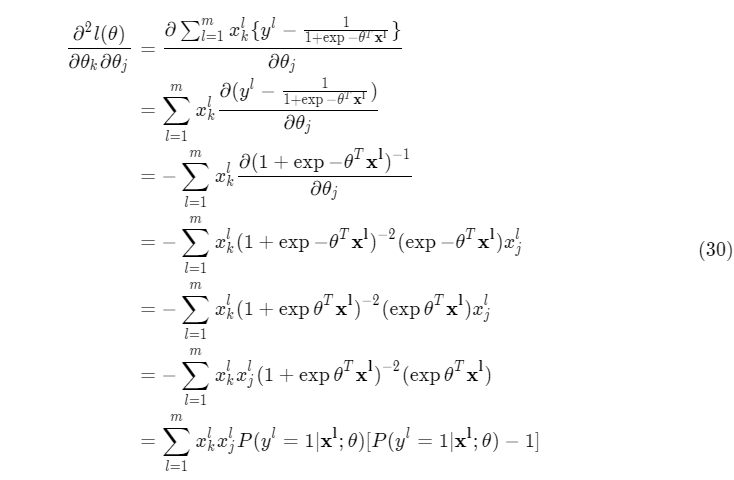
由前文的定义：
x=(x1,x2...,xm)=⎝⎜⎜⎜⎛x01x11⋮xn1x02x12⋮xn2x03x13⋮xn3⋯⋯⋱⋯x0mx1m⋮xnm⎠⎟⎟⎟⎞(n+1)×m(31)
其 Hessian 矩阵为：
H(n+1)×(n+1)=xAxT(32)
满足 Hkj=∂θk∂θj∂2l(θ)，其中：
A=⎝⎜⎜⎜⎛hθ(x1)[hθ(x1)−1]0⋮00hθ(x2)[hθ(x2)−1]⋮0⋯⋯⋱⋯00⋮hθ(xm)[hθ(xm)−1]⎠⎟⎟⎟⎞m×m(33)
如果 A 负定，则对任意的 n+1 维向量 z 有：
zTxAxTz=(xTz)TA(xTz)<0(34)
也就是说 Hessian 矩阵 xAxT 也是负定的。
我们可以先从二维的函数来理解牛顿迭代法,其思想是取图像上的 x 坐标为当前估计零点值的点为切点做一条切线，求切线与 x 轴的交点，将其作为新的估计零点，示意图如下：

图片来自于 Wikipedia
为了求方程 f′(x) 的根，把原函数 f(x) 泰勒展开到二阶形式：
f(x+Δx)=f(x)+f′(x)Δx+21f′′(x)Δx2(35)
当且仅当 Δx 无限趋于 0 时等式成立（即后面的项被省去）。此时上式等价于：
f′(x)+21f′′(x)Δx=0(36)
因为 Δx→0，21 将不再起作用，于是有：
f′(x)+f′′(x)Δx=0(37)
求解得到：
Δx=f′′(x)f′(x)(38)
得出迭代公式：
xt+1=xt−f′′(x)f′(x),t = 0, 1, ...(39)
在我们这里，不难得出迭代公式为：
θ(t+1)=θ(t)−HU=θ(t)−H−1U(40)
其中 U 为一阶导数：
U(n+1)×1=x(n+1)×m⎝⎜⎜⎜⎛y1−hθ(x1)y2−hθ(x2)⋮ym−hθ(xm)⎠⎟⎟⎟⎞m×1=x1[y1−hθ(x1)]+x2[y2−hθ(x2)]+⋯+xm[ym−hθ(xm)](42)
实验结果与分析
梯度上升法
后续生成的数据均满足下面的高斯分布：
第0类(Y=0)：X∼N((0.81.0),(0.2000.3))第1类(Y=1)：X∼N((1.41.6),(0.2000.3))
数据量 20:20
训练结果：
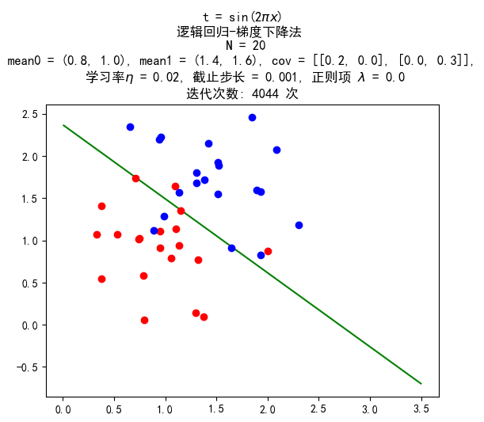
数据量 200:200
训练结果：
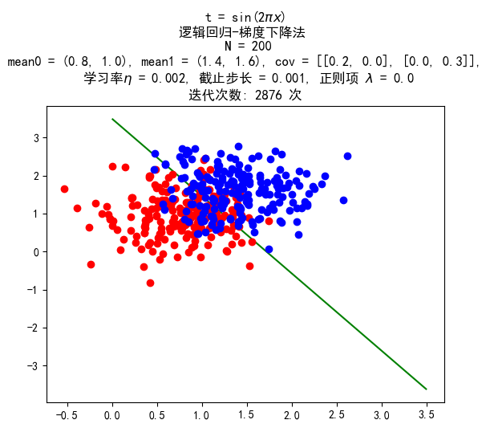
带惩罚项的梯度上升法
惩罚项均取 1.2。
数据量 20:20
训练结果：
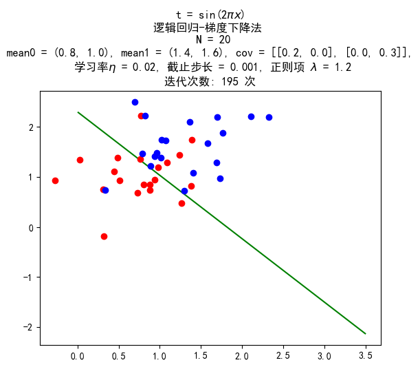
数据量 200:200
训练结果：
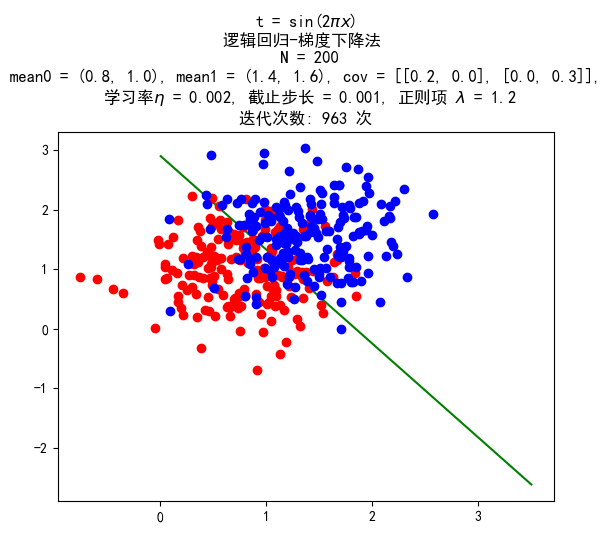
牛顿法
采用服从与梯度上升法相同的分布的数据进行实验，同时增加了一组数据量为 400 的，服从下面的分布的数据进行实验：
第0类(Y=0)：X∼N((3040),(1005))第1类(Y=1)：X∼N((7080),(1005))
数据量 20:20
训练结果：
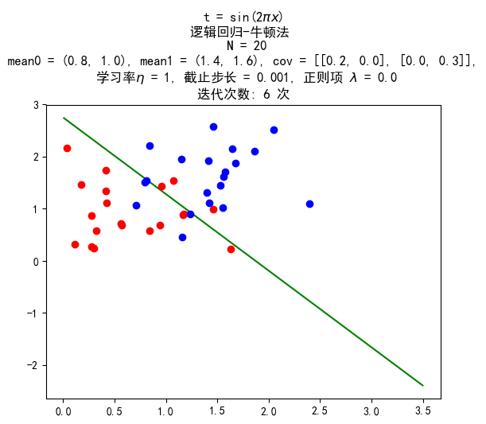
数据量 200:200
训练结果：
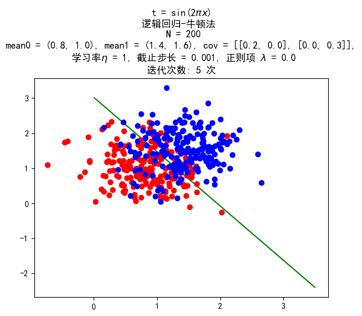
数据量 400:400
训练结果：
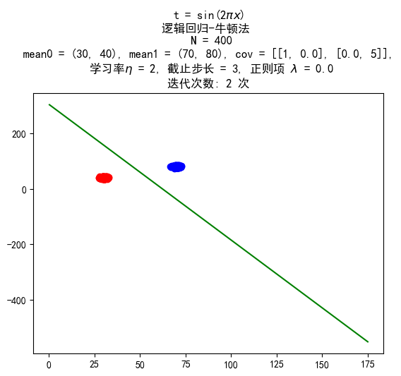
带惩罚项的牛顿法
惩罚项均取 1.2。
数据量 20:20
训练结果：
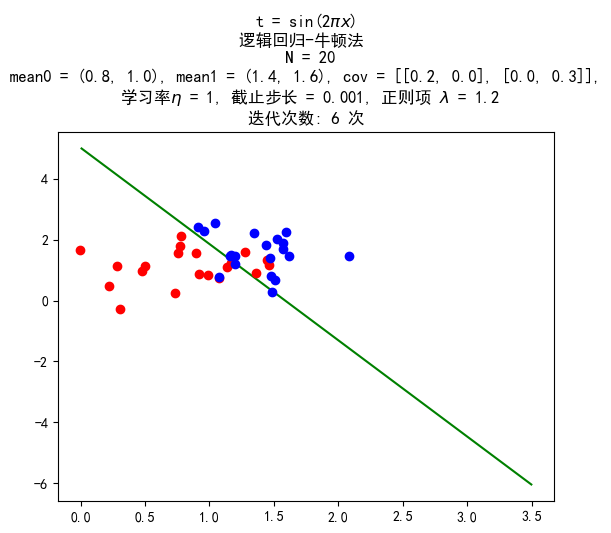
数据量 200:200
训练结果：
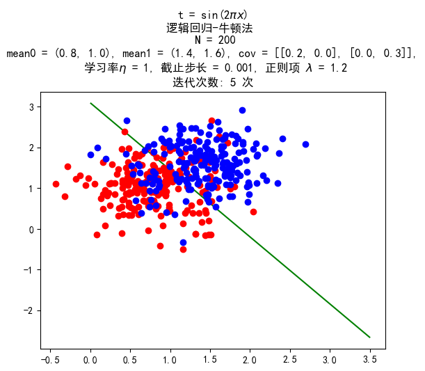
数据量 400:400
训练结果：
UCI 数据测试
训练结果：
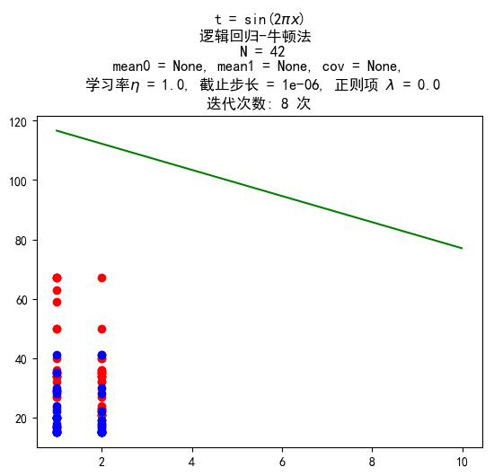
图片中由于只画了前两维的数据，看上去没有分开，但在高纬空间是分开了的。错误率约为 8%。
结论
- 逻辑回归使用牛顿法比梯度下降快很多。
- 为了得到线性分类边界，我们必须使数据服从高斯分布，但是经过实际测量，当不满足朴素贝叶斯假设，得到的结果人仍然较好。
- 黑塞矩阵的计算复杂度比较高，但是牛顿法下降的速率快，因此还是更加优。
- 逻辑回归能够很好地处理高维数据。
参考文献
- [Bishop 2006] Christopher M. Bishop, Pattern Recognition and Machine Learning, Springer, 2006.
- [Andrew Ng] Machine Learning, Coursera
- [Logistic regression] Logistic regression, Wikipedia
- [Logistic function] Logistic function, Wikipedia
- [Newton’s method] Newton’s method, Wikipedia
源代码
参见 https://github.com/upupming/logistic-regression